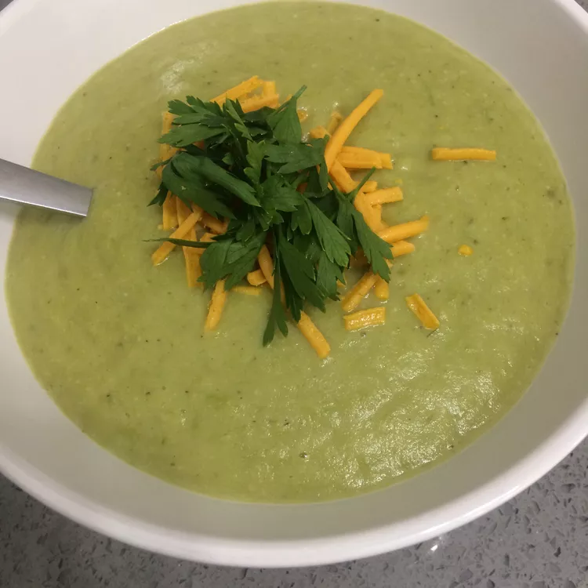

Vegan Broccoli Soup

This is a recipe for a rich and creamy vegan broccoli soup.
The original recipe used for this project can be found here. This site was created for learning purposes (how to make websites, not how to cook), not to steal recipes.
Ingredients
- 1 cup raw cashews
- 5 cups vegetable broth, divided
- 2 Yukon Gold potatoes, cut into 1/2-inch cubes
- 1 onion, finely chopped
- 4 ½ cups coarsely chopped broccoli
- 1 teaspoon dried basil
- 1 teaspoon fine sea salt
- ¼ teaspoon freshly ground black pepper